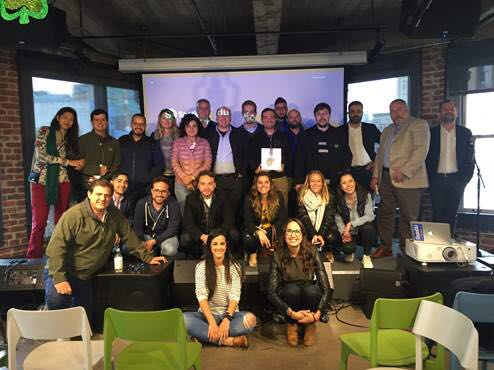
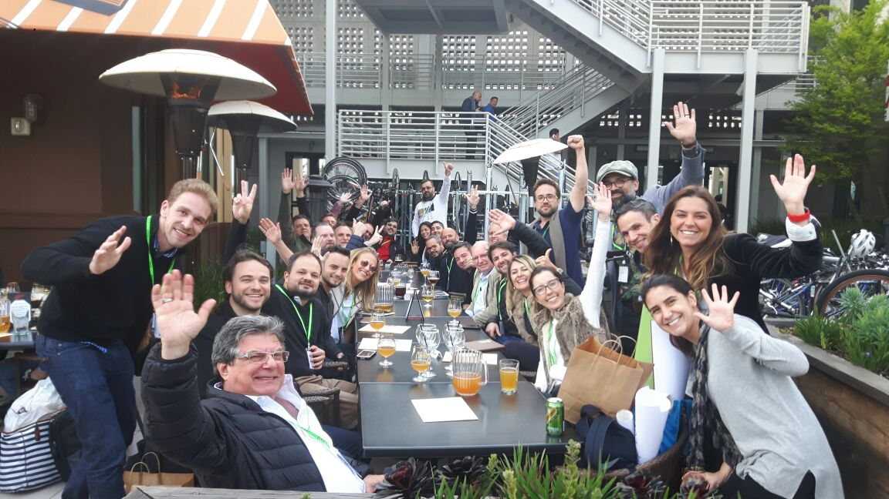
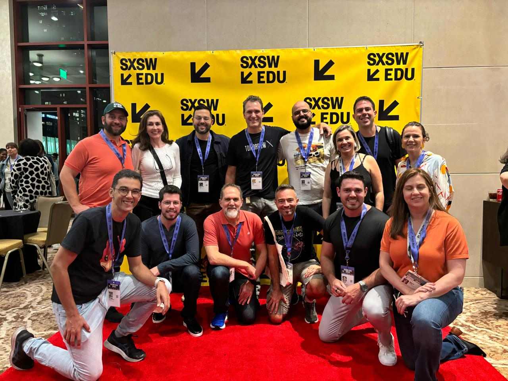
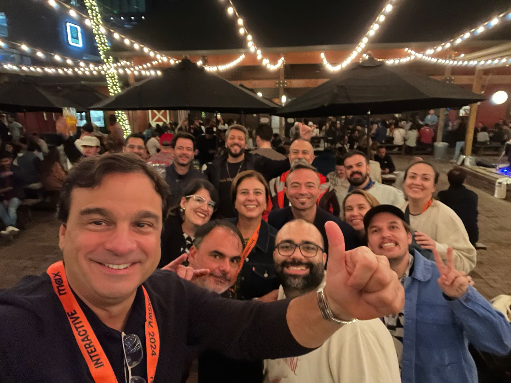

Distance learning at Laureate, adaptive ML at SOMOS, project-based schooling at Centric. Each job changed a different layer of education. Each one hit the same wall.
In 2012, in a meeting room at Laureate, a few of us were arguing about whether the traditional in-person degree still fit what students needed. The debate was already old by then. Enrollment patterns were shifting, and we could see it in the numbers before we could explain it.
I ran digital marketing for Laureate's Brazilian network then: ten higher-education institutions, from Manaus to Porto Alegre. The job was demand generation. The more interesting problem sat underneath it.
Distance and hybrid programs were becoming normal. MOOCs had just arrived with a lot of noise attached. Something quieter was happening next to them. Free content on YouTube and other open platforms was teaching people real, employable skills, with no Ministry of Education authorization behind any of it. We called it "no-MEC" learning. No accreditation, no official recognition, and people finished it and used it anyway.
The market wanted flexibility and lower cost. The institution, its faculty, and the regulator held the other end of the rope. Both sides had a case. A degree still opened doors that a YouTube playlist didn't, whatever each one actually taught.
We launched EAD Laureate, a national distance-learning product, into exactly that gap. One thing became clear from that work. A delivery model can change in a year or two. Getting a new model recognized takes a decade, because that part depends on employers and regulators rather than on the school.
In 2016 I moved to the content side, at SOMOS. The project I still care about from that period is Saraiva Aprova, an adaptive prep course for Brazil's bar exam. Machine learning decided what each student saw next, based on how they were doing.
The bar exam is a clean problem for adaptive learning. One test, pass or fail, taken by motivated adults who know exactly why they're there. If personalization works anywhere, it works in that setting. And it did. We hit the twelve-month enrollment target in under six months.
The lesson there was about goal-setting. Adaptive learning worked here because the objective was narrow and the student already wanted the result. The technology was the straightforward part. The real work was defining a goal specific enough to train a model against. "Pass this exam" is a goal a model can chase. "Become educated" is something else entirely.
That question was in the air well beyond my one product. In 2017 a group of education executives took me to Silicon Valley to see what the rest of the field was building. Two camps stood out. One was big tech treating education as a distribution problem. Google, Meta, LinkedIn, and Spotify each had a way to reach learners through a platform they already ran. The other was the independent bets, among them Singularity University, AltSchool, 42, Minerva, and Draper University, with Stanford's labs in the mix. Every meeting used the phrase "21st century skills." Every meeting pointed to the same mechanism: personalization powered by machine learning. Within two years, some of those companies had folded. AltSchool, which raised around $175 million on this exact premise, stopped running its own schools.
In 2018 I became executive director for Brazil at Centric Learning, and commercial lead for the US expansion. The school ran on WAY American School's model: project-based learning, flipped classrooms, fully remote delivery, and exchange between student cohorts in different countries. The sector files those habits under "21st century skills."
This was the deepest of the three changes. The earlier moves changed where learning happened or how the content adapted. This one changed what a school day actually consisted of. The student ran the project. The teacher coached from the side.
The model and the technology were the easy part of that sale. The hard part was parents. Most of them were educated in rows of desks facing a blackboard, and they had turned out fine. A classroom that didn't look like that read to them as a downgrade. Engagement data helped. So did the outcomes. SAT scores came in above the US average. Credit attainment rose 30% after we rebuilt the model around NPS and behavioral data. Even then, I spent as much time reassuring families as building the program.
The pattern held here too. A learner-centered model has to win over people who learned the old way and did fine by it. That group includes the parents, the districts, and often the students, who all carry a picture of what school is supposed to feel like.
I never fully left the industry. From 2023 I ran growth at Ubiminds, which places senior engineers with US technology teams. I aimed a good share of that work at EdTech companies on purpose. I knew the buyer. I knew what a CTO in that market weighs when choosing whether to build in-house or bring in outside engineers.
The events gave it away. EdTech Week in New York in 2023 and 2024, then SXSW EDU, FETC, and TCEA in 2024. The same rooms I'd sat in years before, roughly the same conversation, with AI where adaptive learning used to be.
Laureate, SOMOS, and Centric each changed a different layer of the same system: where you learn, how the material reaches you, and what the method is. Every one was an attempt to rebuild education around the individual learner instead of the institution's structure.
Each of those projects met resistance in the same place. The technology mostly worked. What lagged was the trust the new model had to earn from an institution, a regulator, an employer, or a family. All of them move slower than a product does.
It's 2026, and AI is working on all three layers at once. Delivery, personalization, and method, together, faster than any earlier wave managed one at a time. The capability curve is steep.
The adoption curve will hold its usual shape. Whether an AI tutor can teach a student better than a classroom is now a serious question, and early evidence says yes. Whether a parent, a school board, or a hiring manager counts that as real schooling is a different question. That one moves at the old speed.
I'm doing an MBA in AI and digital transformation at USP, partly to be useful in that argument as it restarts with AI. This time I'd be on the side that has to make the case to people it hasn't won over yet. In every one of these jobs, the technology was ready before the people around it were. I'd expect AI to keep to the same schedule.
Thiago Reis has spent 11 years in EdTech across higher education, bar-exam prep, and K-12, on the commercial side of distance learning, adaptive platforms, and bilingual schools, and most recently selling engineering teams into EdTech companies.
In the field



